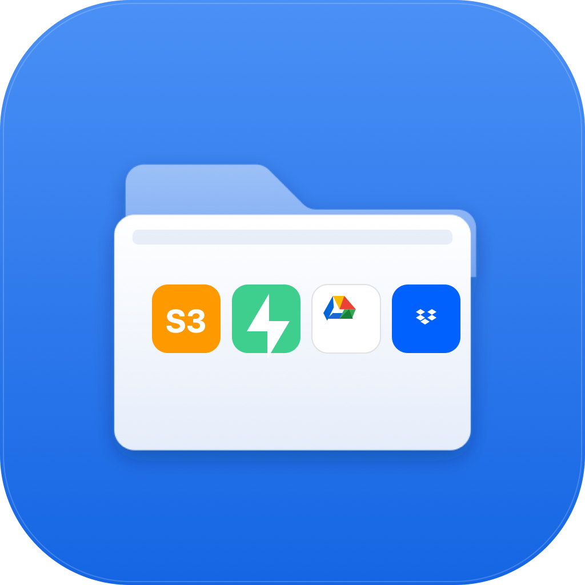

FilesPro
Your S3, R2, GCS, Dropbox, Drive, and 14 more,
in one native Mac app.
Apple Silicon, 121 MB. Free. Open source. MIT licensed.

Your S3, R2, GCS, Dropbox, Drive, and 14 more,
in one native Mac app.
Apple Silicon, 121 MB. Free. Open source. MIT licensed.